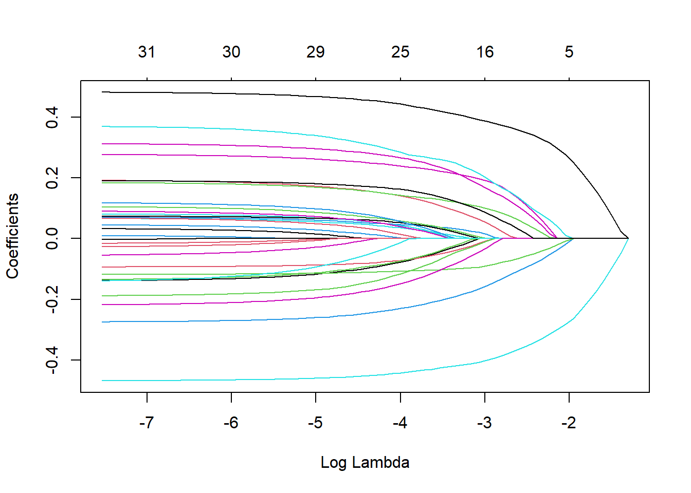

This analysis will use data on influenza patients from a previous paper. For this analysis, I will go through some more data preprocessing, and fit a few basic ML models. The goal is to predict body temperature based on symptom data. The models I will fit in this analysis are: 1. Regression tree; 2. LASSO regression; and 3. Random forest.
First we will load necessary packages (due to past trauma I always load all packages at the beginning of the analysis), and import the clean data.
# Packages
library(here) # For file paths
library(tidymodels) # For model fitting
library(finetune) # For model tuning algorithms
library(doParallel) # Parallel backend for tuning
library(cowplot)
library(scales)
library(rpart)
library(glmnet)
library(ranger)
# Load the data
dat_orig <- readRDS(here::here("static", "processeddata.rds"))
# Fixes weird doParallel errors
unregister_dopar <- function() {
env <- foreach:::.foreachGlobals
rm(list=ls(name=env), pos=env)
}In the previous analysis, we had an issue with rank deficient linear models. This was due to having variables for presence/absence AND symptom severity for Weakness, Cough, and Myalgia. So we will remove the binary versions. We will also ensure that the intensity variables are coded as ordinal vars. Finally, we will remove any binary symptom variables that have less than 50 events, as these variables have a variance close to zero and are unlikely to be predictive.
dat <- dat_orig |>
# Remove the unwanted variables
dplyr::select(-c(CoughYN, CoughYN2, MyalgiaYN, WeaknessYN)) |>
# Rename CoughIntensity to Cough to save me 10 seconds of typing
dplyr::rename(Cough = CoughIntensity) |>
# Code symptom intensities as ordered factors
dplyr::mutate(
across(
.cols = c(Cough, Myalgia, Weakness),
.fns = ~factor(.x,
levels = c("None", "Mild", "Moderate", "Severe"),
ordered = TRUE)
)
) |>
# Remove binary variables with < 50 events
dplyr::select(
# Select all variables with at least 50 yes
where(~sum(.x == "Yes") >= 50),
# Select all variables where the level set is not c("No", "Yes")
where(~all(levels(.x) != c("No", "Yes")))
)
dplyr::glimpse(dat)## Rows: 730
## Columns: 26
## $ SwollenLymphNodes <fct> Yes, Yes, Yes, Yes, Yes, No, No, No, Yes, No, Yes, Yes,~
## $ ChestCongestion <fct> No, Yes, Yes, Yes, No, No, No, Yes, Yes, Yes, Yes, Yes,~
## $ ChillsSweats <fct> No, No, Yes, Yes, Yes, Yes, Yes, Yes, Yes, No, Yes, Yes~
## $ NasalCongestion <fct> No, Yes, Yes, Yes, No, No, No, Yes, Yes, Yes, Yes, Yes,~
## $ Sneeze <fct> No, No, Yes, Yes, No, Yes, No, Yes, No, No, No, No, No,~
## $ Fatigue <fct> Yes, Yes, Yes, Yes, Yes, Yes, Yes, Yes, Yes, Yes, Yes, ~
## $ SubjectiveFever <fct> Yes, Yes, Yes, Yes, Yes, Yes, Yes, Yes, Yes, No, Yes, Y~
## $ Headache <fct> Yes, Yes, Yes, Yes, Yes, Yes, No, Yes, Yes, Yes, Yes, Y~
## $ RunnyNose <fct> No, No, Yes, Yes, No, No, Yes, Yes, Yes, Yes, No, No, Y~
## $ AbPain <fct> No, No, Yes, No, No, No, No, No, No, No, Yes, Yes, No, ~
## $ ChestPain <fct> No, No, Yes, No, No, Yes, Yes, No, No, No, No, Yes, No,~
## $ Diarrhea <fct> No, No, No, No, No, Yes, No, No, No, No, No, No, No, No~
## $ EyePn <fct> No, No, No, No, Yes, No, No, No, No, No, Yes, No, Yes, ~
## $ Insomnia <fct> No, No, Yes, Yes, Yes, No, No, Yes, Yes, Yes, Yes, Yes,~
## $ ItchyEye <fct> No, No, No, No, No, No, No, No, No, No, No, No, Yes, Ye~
## $ Nausea <fct> No, No, Yes, Yes, Yes, Yes, No, No, Yes, Yes, Yes, Yes,~
## $ EarPn <fct> No, Yes, No, Yes, No, No, No, No, No, No, No, Yes, Yes,~
## $ Pharyngitis <fct> Yes, Yes, Yes, Yes, Yes, Yes, Yes, No, No, No, Yes, Yes~
## $ Breathless <fct> No, No, Yes, No, No, Yes, No, No, No, Yes, No, Yes, Yes~
## $ ToothPn <fct> No, No, Yes, No, No, No, No, No, Yes, No, No, Yes, No, ~
## $ Vomit <fct> No, No, No, No, No, No, Yes, No, No, No, Yes, Yes, No, ~
## $ Wheeze <fct> No, No, No, Yes, No, Yes, No, No, No, No, No, Yes, No, ~
## $ Weakness <ord> Mild, Severe, Severe, Severe, Moderate, Moderate, Mild,~
## $ Cough <ord> Severe, Severe, Mild, Moderate, None, Moderate, Severe,~
## $ Myalgia <ord> Mild, Severe, Severe, Severe, Mild, Moderate, Mild, Sev~
## $ BodyTemp <dbl> 98.3, 100.4, 100.8, 98.8, 100.5, 98.4, 102.5, 98.4, 98.~Before we begin modeling, we will split the data into testing and training sets. We will also resample the testing set using CV. We will use 70% of data as the training data and 30% as testing, stratifying by the outcome variable (BodyTemp). Additionally, we will resample the training data using 5-fold cross validation, 5 times repeated. The CV folds will also be stratified on body temperature.
# Set see to ensure reproducibility
set.seed(123)
# Splitting and resampling data
dat_split <- rsample::initial_split(dat, prop = .7, strata = BodyTemp)
train <- rsample::training(dat_split)
test <- rsample::testing(dat_split)
resamples <- rsample::vfold_cv(train, v = 5, repeats = 5, strata = BodyTemp)Next we will define recipes to further preprocess the data. This will ensure that all of the data are in the correct form for the models we want to use. Primarily we need to ensure that the categorical and ordinal variables in the data are converted to numerical variables which can be used for linear algebra and that kind of stuff. For the binary variables, they just need to be converted into a dummy variable for “Yes”. The ordinal variables are a bit more tricky. I will implement three recipes for the ordinal variables: 1. Coding the ordinal variables as integers using a linear increase. So for our ordinal variables with 4 levels, they will be recoded to 1, 2, 3, 4. This assumes a linear increase between each level of the ordinal variable. We could also experiment with other coding schemes (e.g. 0, 1, 2, 3; or 0, 1, 2, 4; or 0, 1, 4, 16; etc.) but I am not going to. Messing around with the codes feels a bit hacky to me when really I only want to assume a monotonic effect. 2. Treating the ordinal variables just as unordered factors. This makes no assumption between the effect of each level. 3. Coding the ordinal variables using orthogonal polynomial contrasts. Since our ordinal variables have four levels, we can get cubic contrasts. This allows each of the ordinal variables to have a linear effect, a quadratic effect, and a cubic effect, instead of just a linear effect as in the first coding scheme.
For fitting the models, I am only going to use the orthongonal polynomials, as all of the models we are fitting can handle variable selection automatically. So we might as well include as much information that could be useful as possible. If I have time later, I will compare these strategies.
# Coding as linear trend using step_ordinalscore()
bt_rec_int <- recipe(BodyTemp ~ ., data = train) |>
step_ordinalscore(Cough, Weakness, Myalgia) |>
step_dummy(all_nominal_predictors())
# Coding as orthogonal polynomial contrasts -- the default for ordinals
bt_rec_pol <- recipe(BodyTemp ~ ., data = train) |>
step_dummy(all_nominal_predictors())
# Convert ordinals to unordered factors and then dummy code
bt_rec_fac <- recipe(BodyTemp ~ ., data = train) |>
step_mutate(across(c(Cough, Weakness, Myalgia), as.factor)) |>
step_dummy(all_nominal_predictors())Next we will define the model specifications we want to use. For the decision tree and random forest models, I will tune all necessary parameters. For the LASSO model, we only need to tune the penalty.
# Spec for single decision tree model
tree_spec <-
decision_tree(
cost_complexity = tune(),
tree_depth = tune(),
min_n = tune()
) |>
set_engine("rpart") |>
set_mode("regression")
# Spec for LASSO model--setting mixture = 1 makes this LASSO instead of ridge
lasso_spec <-
linear_reg(
penalty = tune(),
mixture = 1
) |>
set_engine("glmnet") |>
set_mode("regression")
# Spec for random forest model
rf_spec <-
rand_forest(
mtry = tune(),
min_n = tune(),
trees = tune()
) |>
set_engine("ranger", num.threads = 8, importance = "permutation") |>
set_mode("regression")Now we need to establish a metric for tuning. Since these are regression models, I will use the RMSE to tune all models. So I will define a metric set function, and I will also calculate the RMSE (and a quick and dirty bootstrap SE) assuming the null model where all values are predicted by the mean of the observed values, i.e.
\[\hat{y}_i = \bar{y} \ \forall i.\]
# Define a metric set so we can tune on RMSE only.
bt_met <- metric_set(rmse)
# Calculate the null RMSE
res <- numeric(1000)
for (i in 1:1000) {
Bi <- train[sample(1:nrow(train), size = nrow(train), replace = TRUE), "BodyTemp"]
res[i] <- rmse_vec(
truth = Bi, estimate = rep(mean(train$BodyTemp), nrow(train))
)
}
null_rmse <- tibble(
estimate = rmse_vec(truth = train$BodyTemp,
estimate = rep(mean(train$BodyTemp), nrow(train))),
std_err = sd(res)
)
null_rmse |>
dplyr::mutate(across(everything(), ~round(.x, digits = 2))) |>
knitr::kable(caption = "RMSE and boostrap SE (B = 1000) for the null model.")| estimate | std_err |
|---|---|
| 1.21 | 0.06 |
Now we can get started fitting the models.
The first model I will fit will be a simple regression tree.
First we will define a workflow which combines the model specification with the preprocessor.
tree_wf <- workflow() |>
add_model(tree_spec) |>
add_recipe(bt_rec_pol)I am going to use a bit of an in-depth tuning strategy here: first I will use Latin hypercube sampling to get a grid of potential parameter estimates that covers the space of potential parameter values pretty well. Then, I will use the optimum value from this grid search as the initial value for simulated annealing. The optimal parameter results from simulated annealing will be used for fitting the model.
# Register a parallel backend so this doesn't take all day
doParallel::registerDoParallel()
# Define a grid of potential parameter values using latin hypercube sampling. I
# allowed the dials package to choose the range of the parameters to guess.
tree_grid <- grid_latin_hypercube(
cost_complexity(), tree_depth(), min_n(), size = 10
)
# Grid search for parameter values
tree_grid_res <- tree_wf |>
tune_grid(
resamples = resamples,
metrics = bt_met,
control = control_grid(verbose = TRUE),
grid = tree_grid
)
# Use the grid search to initialize simulated annealing.
# tree_sa <- tree_wf %>%
# tune_sim_anneal(
# resamples = resamples,
# metrics = bt_met,
# control = control_sim_anneal(verbose = TRUE, no_improve = 2),
# iter = 100,
# initial = tree_grid_res
# )
# Turn off the parallel cluster--it gets weird if you don't!
doParallel::stopImplicitCluster()
unregister_dopar()
# Select best parameter values after optimization
best_tree_sa <- select_best(tree_grid_res)
# Finalize workflow with best values
final_tree_wf <- tree_wf |>
finalize_workflow(best_tree_sa)
# Fit model to training data
tree_train_fit <- final_tree_wf |> fit(data = train)Now that the final model is fitted, we can explore the results of fitting on the training data. First, let’s plot the final tree.
# Get a plot of the fitted tree
rpart.plot::rpart.plot(
x = extract_fit_parsnip(tree_train_fit)$fit,
roundint = F,
type = 5,
digits = 4,
main = "Final tree model after tuning"
)Next, we will plot the predicted values vs. the actual outcomes, along with the predicted values vs. the residuals. This can help us understand how well the model is performing, and what deviations it may be making.
# Get predictions and residuals
tree_res <- tree_train_fit |>
augment(new_data = train) |>
dplyr::select(.pred, BodyTemp) |>
dplyr::mutate(.resid = BodyTemp - .pred)
# Plot Predictions vs observed values
tree_pred_obs_plot <- ggplot(tree_res, aes(x = BodyTemp, y = .pred)) +
geom_abline(slope = 1, intercept = 0, color = "red", lty = 2) +
geom_point() +
cowplot::theme_cowplot() +
labs(
title = "Decision tree: predicted vs observed",
x = "Observed",
y = "Fitted"
)
# Plot model predictions vs residuals
tree_pred_res_plot <- ggplot(tree_res, aes(y = .resid, x = .pred)) +
geom_hline(yintercept = 0, color = "red", lty = 2) +
geom_point() +
cowplot::theme_cowplot() +
labs(
title = "Decision tree: residuals vs fitted",
y = "Residuals",
x = "Fitted"
)
# Print both plots together
tree_diag <- cowplot::plot_grid(
tree_pred_obs_plot, tree_pred_res_plot, ncol = 1
)
tree_diagWow! From this plot, we can see that our decision tree is only predicting four distinct values. That isn’t very good at all. Let’s check the parameters and RMSEs of the best perfoming models.
tree_grid_res |>
show_best(n = 10) |>
dplyr::select(rmse = mean, std_err, cost_complexity, tree_depth, min_n) |>
dplyr::mutate(
rmse = round(rmse, 2),
std_err = round(std_err, 2),
cost_complexity = scales::scientific(cost_complexity)
) |>
knitr::kable(caption = "Best performing hyperparameter sets")| rmse | std_err | cost_complexity | tree_depth | min_n |
|---|---|---|---|---|
| 1.18 | 0.02 | 1.56e-02 | 6 | 28 |
| 1.19 | 0.02 | 5.39e-03 | 1 | 17 |
| 1.22 | 0.02 | 2.79e-04 | 4 | 39 |
| 1.23 | 0.02 | 8.68e-05 | 5 | 17 |
| 1.25 | 0.02 | 1.29e-10 | 13 | 35 |
| 1.26 | 0.02 | 2.04e-05 | 11 | 32 |
| 1.28 | 0.02 | 7.64e-08 | 14 | 23 |
| 1.39 | 0.02 | 4.07e-08 | 11 | 11 |
| 1.44 | 0.02 | 1.34e-09 | 9 | 8 |
| 1.51 | 0.03 | 1.57e-06 | 8 | 2 |
Now we can compare the performance of the tree model we selected as the best with the null model.
tree_RMSE <- tree_grid_res |>
show_best(n = 1) |>
dplyr::select(estimate = mean, std_err) |>
dplyr::bind_rows(null_rmse) |>
dplyr::mutate(
model = c("Tree", "Null"),
rmse = round(estimate, 2),
SE = round(std_err, 4),
.keep = "unused"
)
tree_RMSE |>
knitr::kable(caption = "Comparison of RMSE values for the regression tree vs. the null model.")| model | rmse | SE |
|---|---|---|
| Tree | 1.18 | 0.0179 |
| Null | 1.21 | 0.0580 |
Our tree is somewhat better than the null model, but not exceptionally so. It is difficult to judge how big of a discrepancy this is before fitting additional models, though.
Now let’s move on to the LASSO model.
First, I will set up a workflow for the LASSO model. Again, I’m going to code the ordinal variables using orthogonal polynomial contrasts.
lasso_wf <- workflow() |>
add_model(lasso_spec) |>
add_recipe(bt_rec_pol)For LASSO, we likely don’t need to do as in-depth of a tuning routine, but for the sake of consistency, I’ll still tune the penalty parameter in two stages. I’ll use a normal grid search for the first stage (there is no real need to use latin hypercube sampling when we are only tuning one parameter), and then use that as the initial guess for simulated annealing. Hopefully this model will work better than the tree.
# Register a parallel backend so this doesn't take all day
doParallel::registerDoParallel()
# Define a grid of potential parameter values. I again allowed dials to choose
# the range of parameters to search for the penalty parameter.
lasso_grid <- grid_regular(penalty(), levels = 10)
# Grid search for parameter values
lasso_grid_res <- lasso_wf |>
tune_grid(
resamples = resamples,
metrics = bt_met,
control = control_grid(verbose = TRUE),
grid = lasso_grid
)
# Use the grid search to initialize simulated annealing.
# lasso_sa <- lasso_wf %>%
# tune_sim_anneal(
# resamples = resamples,
# metrics = bt_met,
# control = control_sim_anneal(verbose = TRUE, no_improve = 2),
# iter = 100,
# initial = lasso_grid_res
# )
# Turn off the parallel cluster--it gets weird if you don't!
doParallel::stopImplicitCluster()
unregister_dopar()
# Select best parameter values after optimization
best_lasso_sa <- select_best(lasso_grid_res)
# Finalize workflow with best values
final_lasso_wf <- lasso_wf |>
finalize_workflow(best_lasso_sa)
# Fit model to training data
lasso_train_fit <- final_lasso_wf |> fit(data = train)We can’t plot the actual model here, but we can make the trace plot for the coefficients, so let’s do that.
# Extract glmnet object from workflow
x <- lasso_train_fit$fit$fit$fit
# Plot trace plot
plot(x, "lambda")
This is exactly what we should expect–as the penalty increase, more terms drop out of the model. There is nothing really unusual or noteworthy here.
Next, let’s plot the diagnostic plots (same as before) for the LASSO model.
# Get predictions and residuals
lasso_res <- lasso_train_fit |>
augment(new_data = train) |>
dplyr::select(.pred, BodyTemp) |>
dplyr::mutate(.resid = BodyTemp - .pred)
# Plot Predictions vs observed values
lasso_pred_obs_plot <- ggplot(lasso_res, aes(x = BodyTemp, y = .pred)) +
geom_abline(slope = 1, intercept = 0, color = "red", lty = 2) +
geom_point() +
cowplot::theme_cowplot() +
labs(
title = "LASSO: predicted vs observed",
x = "Observed",
y = "Fitted"
)
# Plot model predictions vs residuals
lasso_pred_res_plot <- ggplot(lasso_res, aes(y = .resid, x = .pred)) +
geom_hline(yintercept = 0, color = "red", lty = 2) +
geom_point() +
cowplot::theme_cowplot() +
labs(
title = "LASSO: residuals vs fitted",
y = "Residuals",
x = "Fitted"
)
# Print both plots together
lasso_diag <- cowplot::plot_grid(
lasso_pred_obs_plot, lasso_pred_res_plot, ncol = 1
)
lasso_diagWell, the LASSO model appears to be performing better than the decision tree at least. But there are some noticeable problems. From the plot of predicted vs observed values, we can see that LASSO is not predicting some of the most extreme values at well, which is problematic and will definitely hurt the prediction accuracy. The residual plot also suggests that the LASSO model is biased towards lower values. It could also indicate heteroscedasticity of the residuals, but we don’t need to worry about that right now.
Let’s example the best penalty values and see what the RMSEs look like.
lasso_grid_res |>
show_best(n = 10) |>
dplyr::select(rmse = mean, std_err, penalty) |>
dplyr::mutate(
rmse = round(rmse, 2),
std_err = round(std_err, 4),
`log penalty` = round(log(penalty), 2),
.keep = "unused"
) |>
knitr::kable(caption = "Best performing hyperparameter sets")| rmse | std_err | log penalty |
|---|---|---|
| 1.16 | 0.0170 | -2.56 |
| 1.17 | 0.0167 | -5.12 |
| 1.18 | 0.0167 | -23.03 |
| 1.18 | 0.0167 | -20.47 |
| 1.18 | 0.0167 | -17.91 |
| 1.18 | 0.0167 | -15.35 |
| 1.18 | 0.0167 | -12.79 |
| 1.18 | 0.0167 | -10.23 |
| 1.18 | 0.0167 | -7.68 |
| 1.21 | 0.0177 | 0.00 |
Now we can compare the performance of the LASSO model we selected as the best with the null model (and the tree model).
lasso_RMSE <- lasso_grid_res |>
show_best(n = 1) |>
dplyr::transmute(
rmse = round(mean, 2),
SE = round(std_err, 4),
model = "LASSO"
) |>
dplyr::bind_rows(tree_RMSE)
lasso_RMSE |>
knitr::kable(caption = "Comparison of RMSE values for the LASSO, regression tree, and null models.")| rmse | SE | model |
|---|---|---|
| 1.16 | 0.0170 | LASSO |
| 1.18 | 0.0179 | Tree |
| 1.21 | 0.0580 | Null |
Well, the LASSO model is a bit better than the tree model, but not really. It looks like the tree model only guessing four different values didn’t perform a lot better than LASSO. This might indicate that our predictors are not very strongly associated with the outcome.
Either way, let’s go ahead and fit the random forest model and see if that is any better.
Again we will set up the workflow first.
rf_wf <- workflow() |>
add_model(rf_spec) |>
add_recipe(bt_rec_pol)For the random forest, I’ll skip the initial grid search and just let the simulated annealing algorithm run a bit longer than before.
# Register a parallel backend so this doesn't take all day
doParallel::registerDoParallel()
# Since the potential values of mtry depend on the data, we need to finalize
# the parameters before optimizing.
rf_parms <- rf_spec |>
dials::parameters() |>
dials::finalize(train |> select(-BodyTemp))
# Simulated annealing for parameter optimization. The simulated annealing
# algorithm will run for a max of 250 iterations, but stop if it does not
# improve in 10 consecutive iterations I've also lowered the cooling coefficient
# a bit and changed the neighborhood to search (radius parameter) to have a
# lower minimum and higher maximum.
rf_sa <- rf_wf %>%
tune_sim_anneal(
resamples = resamples,
metrics = bt_met,
control = control_sim_anneal(
verbose = TRUE,
no_improve = 2,
radius = c(0.01, 0.25),
cooling_coef = 0.01
),
iter = 10,
param_info = rf_parms
)
# Turn off the parallel cluster--it gets weird if you don't!
doParallel::stopImplicitCluster()
unregister_dopar()
# Select best parameter values after optimization
best_rf_sa <- select_best(rf_sa)
# Finalize workflow with best values
final_rf_wf <- rf_wf |>
finalize_workflow(best_rf_sa)
# Fit model to training data
rf_train_fit <- final_rf_wf |> fit(data = train)We can’t plot the actual model here, because there are actually very many models. The ranger engine has an implementation for variable importance though, so let’s plot that.
rf_train_fit$fit$fit$fit |>
ranger::importance() |>
tibble::enframe() |>
dplyr::slice_max(value, n = 10) |>
ggplot(aes(x = value, y = forcats::fct_reorder(name, value))) +
geom_col(color = "black", fill = "darkorchid4") +
labs(x = "RF variable importance (permutation method)", y = NULL) +
scale_x_continuous(expand = c(0,0)) +
cowplot::theme_cowplot()Interestingly, from this plot we can see that the most predictive variable in the random forest model was Subjective Fever–it makes sense to me that patients believing they have a fever is actually somewhat predictive of body temperature. I also think it is interesting that the cubic terms and linear terms for both Myalgia and Weakness appear to be important.
Next, let’s plot the diagnostic plots (same as before) for the random forest model.
# Get predictions and residuals
rf_res <- rf_train_fit |>
augment(new_data = train) |>
dplyr::select(.pred, BodyTemp) |>
dplyr::mutate(.resid = BodyTemp - .pred)
# Plot Predictions vs observed values
rf_pred_obs_plot <- ggplot(rf_res, aes(x = BodyTemp, y = .pred)) +
geom_abline(slope = 1, intercept = 0, color = "red", lty = 2) +
geom_point() +
cowplot::theme_cowplot() +
labs(
title = "Random forest: predicted vs observed",
x = "Observed",
y = "Fitted"
)
# Plot model predictions vs residuals
rf_pred_res_plot <- ggplot(rf_res, aes(y = .resid, x = .pred)) +
geom_hline(yintercept = 0, color = "red", lty = 2) +
geom_point() +
cowplot::theme_cowplot() +
labs(
title = "Random forest: residuals vs fitted",
y = "Residuals",
x = "Fitted"
)
# Print both plots together
rf_diag <- cowplot::plot_grid(
rf_pred_obs_plot, rf_pred_res_plot, ncol = 1
)
rf_diagThe random forest appears to suffer from similar issues to the LASSO model: we are having a lot of trouble predicting large values of body temperature. I don’t have anything else to really say about that.
Let’s look at the best parameter combinations.
rf_sa |>
show_best(n = 10) |>
dplyr::select(rmse = mean, std_err, mtry, trees, min_n) |>
dplyr::mutate(
rmse = round(rmse, 2),
std_err = round(std_err, 4),
.keep = "unused"
) |>
knitr::kable(caption = "Best performing hyperparameter sets")| rmse | std_err | mtry | trees | min_n |
|---|---|---|---|---|
| 1.16 | 0.0167 | 6 | 862 | 40 |
| 1.16 | 0.0168 | 6 | 1038 | 35 |
| 1.16 | 0.0166 | 8 | 1038 | 39 |
| 1.17 | 0.0166 | 9 | 862 | 40 |
| 1.17 | 0.0168 | 9 | 782 | 36 |
| 1.17 | 0.0166 | 9 | 1038 | 31 |
| 1.17 | 0.0164 | 12 | 982 | 32 |
| 1.17 | 0.0165 | 13 | 982 | 29 |
Now we can compare the performance of the RF model we selected as the best with the LASSO, single tree, and null models.
rf_RMSE <- rf_sa |>
show_best(n = 1) |>
dplyr::transmute(
rmse = round(mean, 2),
SE = round(std_err, 4),
model = "RF"
) |>
dplyr::bind_rows(lasso_RMSE)
rf_RMSE |>
knitr::kable(caption = "Comparison of RMSE values for the models.")| rmse | SE | model |
|---|---|---|
| 1.16 | 0.0167 | RF |
| 1.16 | 0.0170 | LASSO |
| 1.18 | 0.0179 | Tree |
| 1.21 | 0.0580 | Null |
For the final step of this analysis, we need to choose one of the models. i’m going to choose the LASSO model for the final fit for a few reasons, which I will enumerate now. 1. Linear models are the best models. 2. The RMSE for LASSO was slightly lower using the tuning settings and seed that I did (if you ignore the standard errors anyways). 3. The LASSO model is much simpler than a random forest model, and less prone to overfitting than a decision tree (though I doubt that will matter much for this model).
Now I will fit this model on the testing set to evaluate the out-of-sample performance.
lasso_test_fit <- final_lasso_wf |>
last_fit(split = dat_split, metrics = bt_met)Let’s examine the testing performance compared to the model performance on the training data.
lasso_test_rmse <- collect_metrics(lasso_test_fit) |>
dplyr::select(rmse = .estimate) |>
dplyr::mutate(data = "testing")
lasso_RMSE |>
dplyr::filter(model == "LASSO") |>
dplyr::transmute(
rmse, data = "training"
) |>
bind_rows(lasso_test_rmse) |>
gt::gt(caption = "Comparison of RMSE for LASSO between training and testing data.")| rmse | data |
|---|---|
| 1.160000 | training |
| 1.151135 | testing |
Let’s also examine the diagnostic plots.
# Get predictions and residuals
lasso_test_res <- lasso_test_fit |>
augment() |>
dplyr::select(.pred, BodyTemp) |>
dplyr::mutate(.resid = BodyTemp - .pred)
# Plot Predictions vs observed values
lasso_test_pred_obs_plot <- ggplot(lasso_test_res, aes(x = BodyTemp, y = .pred)) +
geom_abline(slope = 1, intercept = 0, color = "red", lty = 2) +
geom_point() +
cowplot::theme_cowplot() +
labs(
title = "LASSO: predicted vs observed (test data)",
x = "Observed",
y = "Fitted"
)
# Plot model predictions vs residuals
lasso_test_pred_res_plot <- ggplot(lasso_test_res, aes(y = .resid, x = .pred)) +
geom_hline(yintercept = 0, color = "red", lty = 2) +
geom_point() +
cowplot::theme_cowplot() +
labs(
title = "LASSO: residuals vs fitted (test data)",
y = "Residuals",
x = "Fitted"
)
# Print both plots together
lasso_test_diag <- cowplot::plot_grid(
lasso_test_pred_obs_plot, lasso_test_pred_res_plot, ncol = 1
)
lasso_test_diagWell, surprising no one, we see the same problem on the test data. Fortunately, the RMSE did not drop too much, indicating that overfitting is not a huge problem. The main problem is the lack of fit in the first place. We are simply not capturing the trend in the data very well.
That’s all for now about these models–we did not find a very good fit, but this did help us learn a bit more about the data. Particularly, now we know that addressing the skew in the outcome variable of body temperature may be important, or it may be that our data simply aren’t very predictive for body temperature.